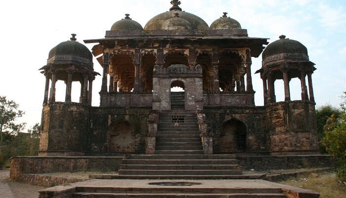
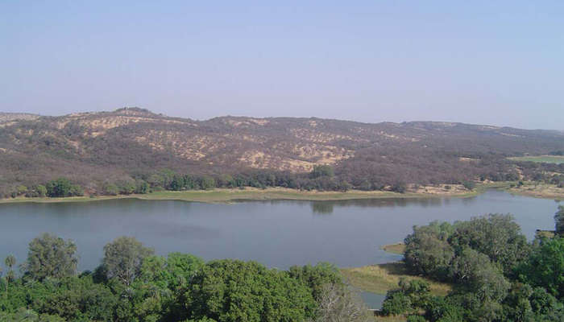

7. Surwal Lake
Surwal Lake is a seasonal yet very picturesque lake, surrounded by meadows, farmlands, and villages.
This lake is considered a haven for nature lovers and bird watchers as it acts as the habitat of numerous migratory birds like spoonbills, sarus cranes, and greylag geese.
This is one of the most scenic Sawai Madhopur tourist places for a day-long picnic and photogenic sunrise views.

8. Trinetra Ganesh Ji
Perched inside Ranthambore Fort, Trinetra Ganesh Temple is a famous Hindu temple of not only the region but also of entire Rajasthan.
Historical sources reveal that the temple was built in 1299, during a war between King Hameer and Ala-ud-din Khilji.
King Hameer was a devotee of Lord Ganesha. He dreamt of trinetra idol, won the battle and constructed a beautiful temple within the fort.
This is one of the must-see tourist places in Sawai Madhopur and the only temple in the world that has the whole family of Lord Ganesha.

9. Rajiv Gandhi Regional Museum
The Regional Museum of Natural History, Sawai Madhopur or The Rajiv Gandhi Regional Museum of Natural History,
Sawai Madhopur is the country`s fourth regional museum of Natural History in Sawai Madhopur, India with exhibits on plants, animals and geology of the Western region of India.
It is situated near Ramsinghpura village, 9 km (5.6 mi) from Sawai Madhopur.

10. JhoJheshwar Mahadev
This temple is one of the most popular places to visit in Sawai Madhopur.
As old as 1200 years, this temple holds a great significance in the lives of the people there.
While you go to seek blessings, you will have a thrilling experience as the way to reach the temple consists of adventures and waterfall too.
So, do visit this temple while visiting Sawai Madhopur.

11. KhaChida Valley
Dotted with rugged hillocks and opulent forests, Kachida Valley is a visual treat and one of the most picturesque places to visit at Sawai Madhopur.
An ideal place for wildlife buffs and nature enthusiasts, this is home to wild boars, sloth bear, and panthers.
Enjoy jeep safari, spot wildlife, and admire the best views of the surrounding forests.
